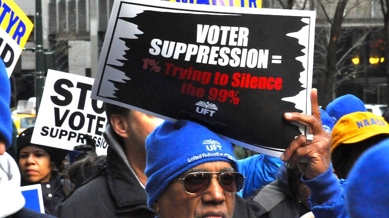

2021-03-08 08:00

According to the Brennan Center for Justice, there are now 253 pieces of legislation in 43 states that limit voting rights and access. A massive voting rights bill, H.R.1 - For the People Act of 2021, was just passed in the House and is now before the U.S. Senate.
Republicans predictably oppose the legislation because expanding voting hours, access to the polls, and absentee ballots cost them dearly in 2020. To preserve their power in Red States and return to glory in Blue ones, they need to put a serious crimp in the last exercise of democracy available to most Americans. The Heritage Foundation has already promised to take H.R.1 to the Supreme Court if it manages to survive a filibuster, claming that it violates the Constitution.
When the Arizona Republican Party went before the Supreme Court to defend ballot disqualification in that state, Justice Amy Coney Barrett asked what the party’s interest was in such measures. The party’s lawyer, Michael Carvin, answered a little too candidly: “Because it puts us at a competitive disadvantage relative to Democrats.”
GovTrack.us predicts that H.R.1 has an 87% chance of being enacted. But some Democratic Senators are on the fence. None of the 8 Democrats who opposed the $15 per hour minimum wage have signed on to H.R.1, and fivethirtyeight.com names two of them — Joe Manchin and Kyrsten Sinema — as weak on opposing voter suppression.
If you think voter suppression is found only in states where not so long ago lynchings took place, or if you think voter suppression is a strategy only Republicans can love — well, you would be wrong on both counts. Massachusetts is one of this states.
Here are some of the bills now before the 192nd General Court of the Massachusetts Legislature. Read the bills, identify the sponsors, and then help get them out of office.
Dec 10 March for Voting Rights by Michael Fleshman under CC BY-SA 2.0